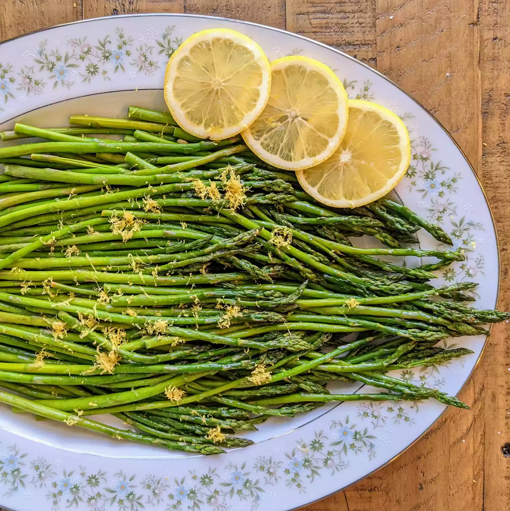

Oven-Roasted Asparagus
Home

This is apagra
oo good. :)
Ingredients
-
1 bunch thin asparagus spears, trimmed
-
3 tablespoons olive oil
-
1 1/2 tablespoons grated Parmesan cheese (Optional)
-
1 clove garlic, minced (Optional)
-
1/4 teaspoon sea salt, or to taste
-
1/2 teaspoon ground black pepper, or to taste
-
1 tablespoon lemon juice (Optional)
- Gather all ingredients. Preheat the oven to 425 degrees F (220 degrees C).
-
Place asparagus into a mixing bowl; drizzle with olive oil and toss to coat.
- Sprinkle with Parmesan cheese and garlic; season to taste with salt and pepper if using. Arrange asparagus in a single layer in a baking dish.
- Bake in the preheated oven until just tender, 12 to 15 minutes depending on thickness. Sprinkle with lemon juice just before serving.